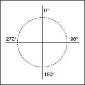

Draw Arc VI
Owning Palette: Picture Functions VIs
Requires: Base Development System
Draws an arc in a picture.
 Add to the block diagram Add to the block diagram |
 Find on the palette Find on the palette |
Owning Palette: Picture Functions VIs
Requires: Base Development System
Draws an arc in a picture.
| Add to the block diagram |
Find on the palette |
 |
arc size determines the degree value of the circle you want to draw. This value can range from -360 to 360. For example, a value of 360 creates a complete circle, and a value of 180 creates a semicircle. | ||||||||||||||
|
start angle determines where the arc begins. | ||||||||||||||
 |
picture is the picture to which you want to add the arc. The default is an empty picture. | ||||||||||||||
 |
rect is a cluster that contains four numeric controls that describe the left, top, right, and bottom coordinates of the outer edges of the rectangle. Horizontal coordinates increase to the right, and vertical coordinates increase to the bottom.
| ||||||||||||||
 |
fill? specifies whether to fill the rectangle. If FALSE (default), the VI draws only the arc component and does not draw interior bounds of the wedge. | ||||||||||||||
 |
color is the color of the lines. If the interior is filled, the VI uses this color for the interior. The default is black. You can wire a color box constant to this input. |
||||||||||||||
|
pen sets the width and style of the pen the VI uses to draw the picture.
| ||||||||||||||
 |
new picture is the picture that contains the new image. You can wire this output to any other picture input to add more drawing instructions to the picture. You also can wire this output to the Picture to Pixmap VI to obtain an image data cluster. You then can use the Graphics Formats VIs to save the image data to a file. You can wire this output to the Concatenate Strings function to concatenate the output from multiple Picture Functions VIs so that they draw on a single picture control. |
A rectangle specifies the size of an oval that contains the arc. Thus, the arc may not fill the whole rectangle. LabVIEW specifies the angles that describe the arc in degrees. It can range from –360° to 360°, with positive angles appearing clockwise, and negative angles appearing counterclockwise. Zero degrees is straight up.
LabVIEW measures all angles as though the enclosing rectangle were square. Thus, a line from the center to the upper-right corner describes an angle of 45°. The following illustration shows the conventions used in specifying the angle of a point of an arc.
